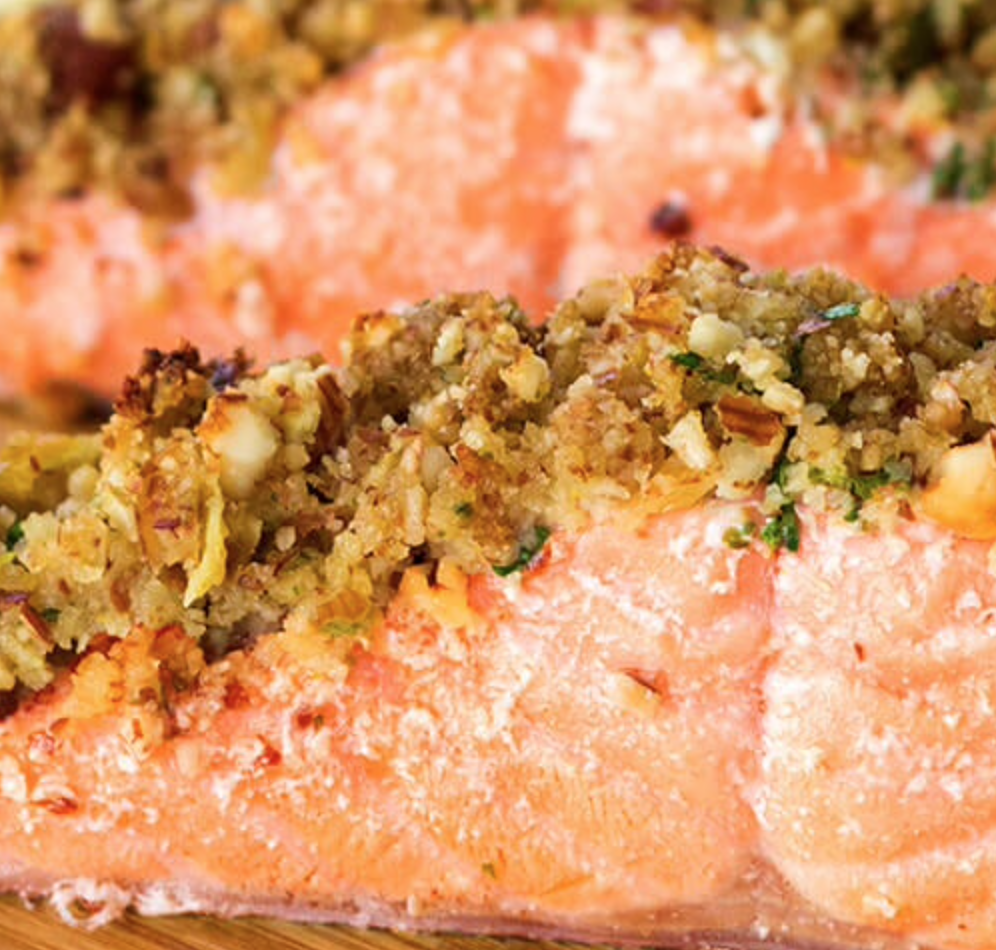

Almond Crusted Salmon

With Tasty Quinoa Olive Salad.
The name of the game is freshness.
Ingredients
- 3 dl quinoa
- salt and pepper, to taste
- 35 grams almond meal
- 1 lemon juiced and zested
- 2 teaspoons coconut oil
- 400 grams salmon fillets
- 300 grams cherry tomatoes, halved
- 50 grams Kalamata olives, pitted and halved
- 1 garlic clove, minced
- a handful of fresh leaf parsley, chopped
Steps
- Preheat oven to 200 degrees (fan 180). Line up a baking tray with baking paper.
- Cook Quinoa according to package instructions. When cooked, drain and rinse under cold water. Drain again and place on a large bowl.
- Combine almond meal, lemon zest and coconut oil in a small bowl. Mix well with fork. Season the fish with salt and pepper, and place onto baking tray.
- Press almond mixture on top of each salmon fillet and bake for 20 minutes.
- Combine quinoa with cherry tomatoes, olives, garlic, parsley and lemon juice. Season well and serve with fish. Enjoy!
Back to recipes!